Warp
by Kazu Yamamoto, Michael Snoyman, and Andreas Voellmy
Warp is a high-performance HTTP server library written in Haskell, a purely functional programming language. Both Yesod, a web application framework, and mighty, an HTTP server, are implemented over Warp. According to our throughput benchmark, mighty provides performance on a par with nginx. This article will explain the architecture of Warp and how we achieved its performance. Warp can run on many platforms, including Linux, BSD variants, Mac OS, and Windows. To simplify our explanation, however, we will only talk about Linux for the remainder of this article.
Network Programming in Haskell
Some people believe that functional programming languages are slow or impractical. However, to the best of our knowledge, Haskell provides a nearly ideal approach for network programming. This is because the Glasgow Haskell Compiler (GHC), the flagship compiler for Haskell, provides lightweight and robust user threads (sometimes called green threads). In this section, we briefly review some well-known approaches to server-side network programming and compare them with network programming in Haskell. We demonstrate that Haskell offers a combination of programmability and performance not available in other approaches: Haskell’s convenient abstractions allow programmers to write clear, simple code, while GHC’s sophisticated compiler and multi-core run-time system produce multi-core programs that execute in a way very similar to the most advanced hand-crafted network programs.
Native Threads
Traditional servers use a technique called thread programming. In this architecture, each connection is handled by a single process or native thread (sometimes called an OS thread).
This architecture can be further segmented based on the mechanism used for creating the processes or native threads. When using a thread pool, multiple processes or native threads are created in advance. An example of this is the prefork mode in Apache. Otherwise, a process or native thread is spawned each time a connection is received. Figure 1 illustrates this.
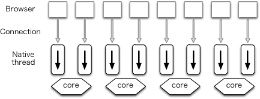
The advantage of this architecture is that it enables developers to write clear code. In particular, the use of threads allows the code to follow a simple and familiar flow of control and to use simple procedure calls to fetch input or send output. Also, because the kernel assigns processes or native threads to available cores, we can balance utilization of cores. Its disadvantage is that a large number of context switches between kernel and processes or native threads occur, resulting in performance degradation.
Event-Driven Architecture
In the world of high-performance servers, the recent trend has been to take advantage of event-driven programming. In this architecture multiple connections are handled by a single process (Figure 2). Lighttpd is an example of a web server using this architecture.
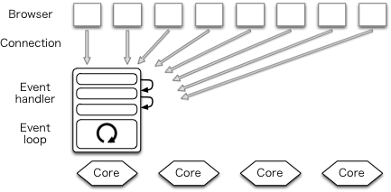
Since there is no need to switch processes, fewer context switches occur, and performance is thereby improved. This is its chief advantage.
On the other hand, this architecture substantially complicates the network program. In particular, this architecture inverts the flow of control so that the event loop controls the overall execution of the program. Programmers must therefore restructure their program into event handlers, each of which execute only non-blocking code. This restriction prevents programmers from performing I/O using procedure calls; instead more complicated asynchronous methods must be used. Along the same lines, conventional exception handling methods are no longer applicable.
One Process Per Core
Many have hit upon the idea of creating $n$ event-driven processes to utilize $n$ cores (Figure 3). Each process is called a worker. A service port must be shared among workers. Using the prefork technique, port sharing can be achieved.
In traditional process programming, a process for a new connection is forked after the connection is accepted. In contrast, the prefork technique forks processes before new connections are accepted. Despite the shared name, this technique should not be confused with Apache’s prefork mode.
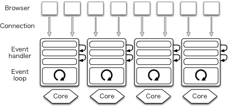
One web server that uses this architecture is nginx. Node.js used the event-driven architecture in the past, but recently it also implemented the prefork technique. The advantage of this architecture is that it utilizes all cores and improves performance. However, it does not resolve the issue of programs having poor clarity, due to the reliance on handler and callback functions.
User Threads
GHC’s user threads can be used to help solve the code clarity issue. In particular, we can handle each HTTP connection in a new user thread. This thread is programmed in a traditional style, using logically blocking I/O calls. This keeps the program clear and simple, while GHC handles the complexities of non-blocking I/O and multi-core work dispatching.
Under the hood, GHC multiplexes user threads over a small number of native threads. GHC’s run-time system includes a multi-core thread scheduler that can switch between user threads cheaply, since it does so without involving any OS context switches.
GHC’s user threads are lightweight; modern computers can run 100,000 user threads smoothly. They are robust; even asynchronous exceptions are caught (this feature is used by the timeout handler, described in Section sec.warp.arch and in Section sec.warp.timers.) In addition, the scheduler includes a multi-core load balancing algorithm to help utilize capacity of all available cores.
When a user thread performs a logically blocking I/O operation, such as receiving or sending data on a socket, a non-blocking call is actually attempted. If it succeeds, the thread continues immediately without involving the I/O manager or the thread scheduler. If the call would block, the thread instead registers interest for the relevant event with the run-time system’s I/O manager component and then indicates to the scheduler that it is waiting. Independently, an I/O manager thread monitors events and notifies threads when their events occur, causing them to be re-scheduled for execution. This all happens transparently to the user thread, with no effort on the Haskell programmer’s part.
In Haskell, most computation is non-destructive. This means that almost all functions are thread-safe. GHC uses data allocation as a safe point to switch context of user threads. Because of functional programming style, new data are frequently created and it is known that such data allocation occurs regularly enough for context switching.
Though some languages provided user threads in the past, they are not commonly used now because they were not lightweight or were not robust. Note that some languages provide library-level coroutines but they are not preemptive threads. Note also that Erlang and Go provide lightweight processes and lightweight goroutines, respectively.
As of this writing, mighty uses the prefork technique to fork processes in order to use more cores. (Warp does not have this functionality.) Figure 4 illustrates this arrangement in the context of a web server with the prefork technique written in Haskell, where each browser connection is handled by a single user thread, and a single native thread in a process running on a CPU core handles work from several connections.
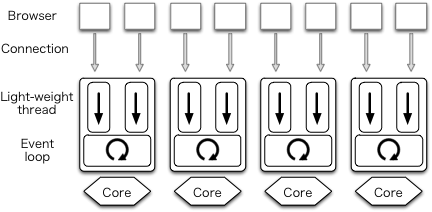
We found that the I/O manager component of the GHC run-time system itself has performance bottlenecks. To solve this problem, we developed a parallel I/O manager that uses per-core event registration tables and event monitors to greatly improve multi-core scaling. A Haskell program with the parallel I/O manager is executed as a single process and multiple I/O managers run as native threads to use multiple cores (Figure 5). Each user thread is executed on any one of the cores.
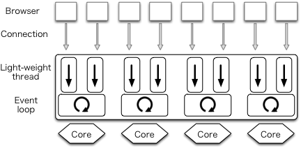
GHC version 7.8—which includes the parallel I/O manager—will be released in the autumn of 2013. With GHC version 7.8, Warp itself will be able to use this architecture without any modifications and mighty will not need to use the prefork technique.
Warp’s Architecture
Warp is an HTTP engine for the Web Application Interface (WAI). It runs WAI applications over HTTP. As we described above, both Yesod and mighty are examples of WAI applications, as illustrated in Figure 6.
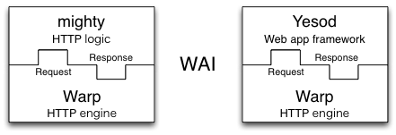
The type of a WAI application is as follows:
type Application = Request -> ResourceT IO Response
In Haskell, argument types of functions are separated by right arrows and the rightmost one is the type of the return value. So, we can interpret the definition as: a WAI Application takes a Request and returns a Response, used in the context where I/O is possible and resources are well managed.
After accepting a new HTTP connection, a dedicated user thread is spawned for the connection. It first receives an HTTP request from a client and parses it to Request. Then, Warp gives the Request to the WAI application and receives a Response from it. Finally, Warp builds an HTTP response based on the Response value and sends it back to the client. This is illustrated in Figure 7.
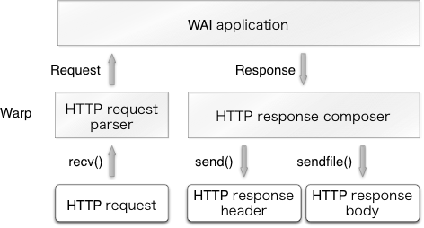
The user thread repeats this procedure as necessary and terminates itself when the connection is closed by the peer or an invalid request is received. The thread also terminates if a significant amount of data is not received after a certain period of time (i.e., a timeout has occurred).
The Performance of Warp
Before we explain how to improve the performance of Warp, we would like to show the results of our benchmark. We measured throughput of mighty version 2.8.4 (with Warp version 1.3.8.1) and nginx version 1.4.0. Our benchmark environment is as follows:
-
Two “12 core” machines (Intel Xeon E5645, two sockets, 6 cores per 1 CPU) connected with 1 gbps Ethernet.
-
One machine directly runs Linux version 3.2.0 (Ubuntu 12.04 LTS).
-
The other directly runs FreeBSD 9.1.
We tested several benchmark tools in the past and our favorite one was httperf. Since it uses select() and is just a single process program, it reaches its performance limits when we try to measure HTTP servers on multi-core machines. So, we switched to weighttp, which is based on libev (the epoll family) and can use multiple native threads. We used weighttp from FreeBSD as follows:
weighttp -n 100000 -c 1000 -t 10 -k http://<ip_address>:<port_number>/
This means that 1,000 HTTP connections are established, with each connection sending 100 requests. 10 native threads are spawned to carry out these jobs.
The target web servers were compiled on Linux. For all requests, the same index.html file is returned. We used nginx’s index.html, whose size is 151 bytes.
Since Linux/FreeBSD have many control parameters, we need to configure the parameters carefully. You can find a good introduction to Linux parameter tuning in ApacheBench and HTTPerf.1 We carefully configured both mighty and nginx as follows:
-
enabled file descriptor cache
-
disabled logging
-
disabled rate limitation
Here is the result:
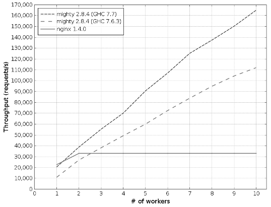
The x-axis is the number of workers and the y-axis gives throughput, measured in requests per second.
-
mighty 2.8.4 (GHC 7.7): compiled with GHC version 7.7.20130504 (to be GHC version 7.8). It uses the parallel I/O manager with only one worker. GHC run-time option,
+RTS -qa -A128m -N<x>is specified where<x>is the number of cores and128mis the allocation area size used by the garbage collector. -
mighty 2.8.4 (GHC 7.6.3): compiled with GHC version 7.6.3 (which is the latest stable version).
Key Ideas
We kept four key ideas in mind when implementing our high-performance server in Haskell:
-
Issuing as few system calls as possible
-
Using specialized function implementations and avoiding recalculation
-
Avoiding locks
-
Using proper data structures
Issuing as Few System Calls as Possible
Although system calls are typically inexpensive on most modern operating systems, they can add a significant computational burden when called frequently. Indeed, Warp performs several system calls when serving each request, including recv(), send() and sendfile() (a system call that allows zero-copying a file). Other system calls, such as open(), stat() and close() can often be omitted when processing a single request, thanks to a cache mechanism described in Section sec.warp.timers.
We can use the strace command to see what system calls are actually used. When we observed the behavior of nginx with strace, we noticed that it used accept4(), which we did not know about at the time.
Using Haskell’s standard network library, a listening socket is created with the non-blocking flag set. When a new connection is accepted from the listening socket, it is necessary to set the corresponding socket as non-blocking as well. The network library implements this by calling fcntl() twice: once to get the current flags and twice to set the flags with the non-blocking flag enabled.
On Linux, the non-blocking flag of a connected socket is always unset even if its listening socket is non-blocking. The system call accept4() is an extension version of accept() on Linux. It can set the non-blocking flag when accepting. So, if we use accept4(), we can avoid two unnecessary calls to fcntl(). Our patch to use accept4() on Linux has been already merged to the network library.
Specialized Functions and Avoiding Recalculation
GHC provides a profiling mechanism, but it has a limitation: correct profiling is only possible if a program runs in the foreground and does not spawn child processes. If we want to profile live activities of servers, we need to take special care.
mighty has this mechanism. Suppose that $n$ is the number of workers in the configuration file of mighty. If $n$ is greater than or equal to 2, mighty creates $n$ child processes and the parent process just works to deliver signals. However, if $n$ is 1, mighty does not create any child process. Instead, the executed process itself serves HTTP. Also, mighty stays in its terminal if debug mode is on.
When we profiled mighty, we were surprised that the standard function to format date strings consumed the majority of CPU time. As many know, an HTTP server should return GMT date strings in header fields such as Date, Last-Modified, etc.:
Date: Mon, 01 Oct 2012 07:38:50 GMT
So, we implemented a special formatter to generate GMT date strings. A comparison of our specialized function and the standard Haskell implementation using the criterion benchmark library showed that ours was much faster. But if an HTTP server accepts more than one request per second, the server repeats the same formatting again and again. So, we also implemented a cache mechanism for date strings.
We also explain specialization and avoiding recalculation in Section sec.warp.writingparser and Section sec.warp.composer.
Avoiding Locks
Unnecessary locks are evil for programming. Our code sometimes uses unnecessary locks imperceptibly because, internally, the run-time systems or libraries use locks. To implement high-performance servers, we need to identify such locks and avoid them if possible. It is worth pointing out that locks will become much more critical under the parallel I/O manager. We will talk about how to identify and avoid locks in Section sec.warp.connectiontimers and Section sec.warp.memory.
Using Proper Data Structures
Haskell’s standard data structure for strings is String, which is a linked list of Unicode characters. Since list programming is the heart of functional programming, String is convenient for many purposes. But for high-performance servers, the list structure is too slow and Unicode is too complex since the HTTP protocol is based on byte streams. Instead, we use ByteString to express strings (or buffers). A ByteString is an array of bytes with metadata. Thanks to this metadata, splicing without copying is possible. This is described in detail in Section sec.warp.writingparser.
Other examples of proper data structures are Builder and double IORef. They are explained in Section sec.warp.composer and Section sec.warp.connectiontimers, respectively.
HTTP Request Parser
Besides the many issues involved with efficient concurrency and I/O in a multi-core environment, Warp also needs to be certain that each core is performing its tasks efficiently. In that regard, the most relevant component is the HTTP request processor. Its purpose is to take a stream of bytes coming from the incoming socket, parse out the request line and individual headers, and leave the request body to be processed by the application. It must take this information and produce a data structure which the application (whether a Yesod application, mighty, or something else) will use to form its response.
The request body itself presents some interesting challenges. Warp provides full support for pipelining and chunked request bodies. As a result, Warp must “dechunk” any chunked request bodies before passing them to the application. With pipelining, multiple requests can be transferred on a single connection. Therefore, Warp must ensure that the application does not consume too many bytes, as that would remove vital information from the next request. It must also be sure to discard any data remaining from the request body; otherwise, the remainder will be parsed as the beginning of the next request, causing either an invalid request or a misunderstood request.
As an example, consider the following theoretical request from a client:
POST /some/path HTTP/1.1
Transfer-Encoding: chunked
Content-Type: application/x-www-form-urlencoded
0008
message=
000a
helloworld
0000
GET / HTTP/1.1
The HTTP parser must extract the /some/path pathname and the Content-Type header and pass these to the application. When the application begins reading the request body, it must strip off the chunk headers (e.g., 0008 and 000a) and instead provide the actual content, i.e., message=helloworld. It must also ensure that no more bytes are consumed after the chunk terminator (0000) so as to not interfere with the next pipelined request.
Writing the Parser
Haskell is known for its powerful parsing capabilities. It has traditional parser generators as well as combinator libraries, such as Parsec and Attoparsec. Parsec and Attoparsec’s textual modules work in a fully Unicode-aware manner. However, HTTP headers are guaranteed to be ASCII, so Unicode awareness is an overhead we need not incur.
Attoparsec also provides a binary interface for parsing, which would let us bypass the Unicode overhead. But as efficient as Attoparsec is, it still introduces an overhead relative to a hand-rolled parser. So for Warp, we have not used any parser libraries. Instead, we perform all parsing manually.
This gives rise to another question: how do we represent the actual binary data? The answer is a ByteString, which is essentially three pieces of data: a pointer to some piece of memory, the offset from the beginning of that memory to the data in question, and the size of our data.
The offset information may seem redundant. We could instead insist that our memory pointer point to the beginning of our data. However, by including the offset, we enable data sharing. Multiple ByteStrings can all point to the same chunk of memory and use different parts of it (also known as splicing). There is no worry of data corruption, since ByteStrings (like most Haskell data) are immutable. When the final pointer to a piece of memory is no longer used, then the memory buffer is deallocated.
This combination is perfect for our use case. When a client sends a request over a socket, Warp will read the data in relatively large chunks (currently 4096 bytes). In most cases, this is large enough to encompass the entire request line and all request headers. Warp will then use its hand-rolled parser to break this large chunk into lines. This can be done efficiently for the following reasons:
-
We need only scan the memory buffer for newline characters. The bytestring library provides such helper functions, which are implemented with lower-level C functions like
memchr. (It’s actually a little more complicated than that due to multiline headers, but the same basic approach still applies.) -
There is no need to allocate extra memory buffers to hold the data. We just take splices from the original buffer. See Figure 9 for a demonstration of splicing individual components from a larger chunk of data. It’s worth stressing this point: we actually end up with a situation which is more efficient than idiomatic C. In C, strings are null-terminated, so splicing requires allocating a new memory buffer, copying the data from the old buffer, and appending the null character.
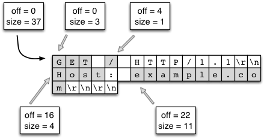
Once the buffer has been broken into lines, we perform a similar maneuver to turn the header lines into key/value pairs. For the request line, we parse the requested path fairly deeply. Suppose we have a request for:
GET /buenos/d%C3%ADas HTTP/1.1
In this case, we would need to perform the following steps:
-
Separate the request method, path, and version into individual pieces.
-
Tokenize the path along forward slashes, ending up with
[``"buenos", "d%C3%ADas"``]. -
Percent-decode the individual pieces, ending up with
[``"buenos", "d\195\173as"``]. -
UTF8-decode each piece, finally arriving at Unicode-aware text:
[``"buenos", "días"``].
There are a few performance gains we achieve with this process:
-
As with newline checking, finding forward slashes is a very efficient operation.
-
We use an efficient lookup table for turning the Hex characters into numerical values. This code is a single memory lookup and involves no branching.
-
UTF8-decoding is a highly optimized operation in the text package. Likewise, the text package represents this data in an efficient, packed representation.
-
Due to Haskell’s laziness, this calculation will be performed on demand. If the application in question does not need the textual version of the path, none of these steps will be performed.
The final piece of parsing we perform is dechunking. In many ways, dechunking is a simpler form of parsing. We parse a single Hex number, and then read the stated number of bytes. Those bytes are passed on verbatim (without any buffer copying) to the application.
Conduit
This article has mentioned a few times the concept of passing the request body to the application. It has also hinted at the issue of the application passing a response back to the server, and the server receiving data from and sending data to the socket. A final related point not yet discussed is middleware, which are components sitting between the server and application that modify the request or response. The definition of a middleware is:
type Middleware = Application -> Application
The intuition behind this is that a middleware will take some “internal” application, preprocess the request, pass it to the internal application to get a response, and then postprocess the response. For our purposes, a good example would be a gzip middleware, which automatically compresses response bodies.
A prerequisite for the creation of such middlewares is a means of modifying both incoming and outgoing data streams. A standard approach historically in the Haskell world has been lazy I/O. With lazy I/O, we represent a stream of values as a single, pure data structure. As more data is requested from this structure, I/O actions are performed to grab the data from its source. Lazy I/O provides a huge level of composability. However, for a high-throughput server, it presents a major obstacle: resource finalization in lazy I/O is non-deterministic. Using lazy I/O, it would be easy for a server under high load to quickly run out of file descriptors.
It would also be possible to use a lower-level abstraction, essentially dealing directly with read and write functions. However, one of the advantages of Haskell is its high-level approach, allowing us to reason about the behavior of our code. It’s also not obvious how such a solution would deal with some of the common issues which arise when creating web applications. For example, it’s often necessary to have a buffering solution, where we read a certain amount of data at one step (e.g., the request header processing), and read the remainder in a separate part of the code base (e.g., the web application).
To address this dilemma, the WAI protocol (and therefore Warp) is built on top of the conduit package. This package provides an abstraction for streams of data. It keeps much of the composability of lazy I/O, provides a buffering solution, and guarantees deterministic resource handling. Exceptions are also kept where they belong, in the parts of your code which deal with I/O, instead of hiding them in a data structure claiming to be pure.
Warp represents the incoming stream of bytes from the client as a Source, and writes data to be sent to the client to a Sink. The Application is provided a Source with the request body, and provides a response as a Source as well. Middlewares are able to intercept the Sources for the request and response bodies and apply transformations to them. Figure 10 demonstrates how a middleware fits between Warp and an application. The composability of the conduit package makes this an easy and efficient operation.
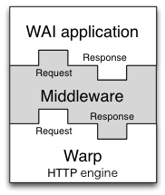
Elaborating on the gzip middleware example, conduit allows us to create a middleware which runs in a nearly optimal manner. The original Source provided by the application is connected to the gzip Conduit. As each new chunk of data is produced by the initial Source, it is fed into the zlib library, filling up a buffer with compressed bytes. When that buffer is filled, it is emitted, either to another middleware, or to Warp. Warp then takes this compressed buffer and sends it over the socket to the client. At this point, the buffer can either be reused, or its memory freed. In this way, we have optimal memory usage, do not produce any extra data in the case of network failure, and lessen the garbage collection burden for the run time system.
Conduit itself is a large topic, and therefore will not be covered in more depth. It would suffice to say for now that conduit’s usage in Warp is a contributing factor to its high performance.
Slowloris Protection
We have one final concern: the Slowloris attack. This is a form of Denial of Service (DoS) attack wherein each client sends very small amounts of information. By doing so, the client is able to maintain a higher number of connections on the same hardware/bandwidth. Since the web server has a constant overhead for each open connection regardless of bytes being transferred, this can be an effective attack. Therefore, Warp must detect when a connection is not sending enough data over the network and kill it.
We discuss the timeout manager in more detail below, which is the true heart of Slowloris protection. When it comes to request processing, our only requirement is to tease the timeout handler to let it know more data has been received from the client. In Warp, this is all done at the conduit level. As mentioned, the incoming data is represented as a Source. As part of that Source, every time a new chunk of data is received, the timeout handler is teased. Since teasing the handler is such a cheap operation (essentially just a memory write), Slowloris protection does not hinder the performance of individual connection handlers in a significant way.
HTTP Response Composer
This section describes the HTTP response composer of Warp. A WAI Response has three constructors:
ResponseFile Status ResponseHeaders FilePath (Maybe FilePart)
ResponseBuilder Status ResponseHeaders Builder
ResponseSource Status ResponseHeaders (Source (ResourceT IO) (Flush Builder))
ResponseFile is used to send a static file while ResponseBuilder and ResponseSource are for sending dynamic contents created in memory. Each constructor includes both Status and ResponseHeaders. ResponseHeaders is defined as a list of key/value header pairs.
Composer for HTTP Response Header
The old composer built HTTP response header with a Builder, a rope-like data structure. First, it converted Status and each element of ResponseHeaders into a Builder. Each conversion runs in O(1). Then, it concatenates them by repeatedly appending one Builder to another. Thanks to the properties of Builder, each append operation also runs in O(1). Lastly, it packs an HTTP response header by copying data from Builder to a buffer in O(N).
In many cases, the performance of Builder is sufficient. But we experienced that it is not fast enough for high-performance servers. To eliminate the overhead of Builder, we implemented a special composer for HTTP response headers by directly using memcpy(), a highly tuned byte copy function in C.
Composer for HTTP Response Body
For ResponseBuilder and ResponseSource, the Builder values provided by the application are packed into a list of ByteString. A composed header is prepended to the list and send() is used to send the list in a fixed buffer.
For ResponseFile, Warp uses send() and sendfile() to send an HTTP response header and body, respectively. Figure 7 illustrates this case. Again, open(), stat(), close() and other system calls can be omitted thanks to the cache mechanism described in Section sec.warp.timers. The following subsection describes another performance tuning in the case of ResponseFile.
Sending the Header and Body Together
When we measured the performance of Warp to send static files, we always did it with high concurrency (multiple connections at the same time) and achieved good results. However, when we set the concurrency value to 1, we found Warp to be really slow.
Observing the results of the tcpdump command, we realized that this is because originally Warp used the combination of writev() for header and sendfile() for body. In this case, an HTTP header and body are sent in separate TCP packets (Figure 11).
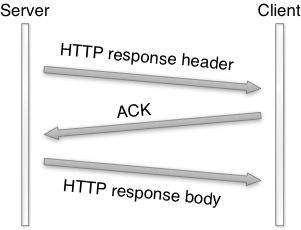
To send them in a single TCP packet (when possible), new Warp switched from writev() to send(). It uses send() with the MSG_MORE flag to store a header and sendfile() to send both the stored header and a file. This made the throughput at least 100 times faster according to our throughput benchmark.
Clean-up with Timers
This section explain how to implement connection timeout and how to cache file descriptors.
Timers for Connections
To prevent Slowloris attacks, communication with a client should be canceled if the client does not send a significant amount of data for a certain period. Haskell provides a standard function called timeout whose type is as follows:
Int -> IO a -> IO (Maybe a)
The first argument is the duration of the timeout, in microseconds. The second argument is an action which handles input/output (IO). This function returns a value of Maybe a in the IO context. Maybe is defined as follows:
data Maybe a = Nothing | Just a
Nothing indicates an error (with no reason specified) and Just encloses a successful value a. So, timeout returns Nothing if an action is not completed in a specified time. Otherwise, a successful value is returned wrapped with Just. The timeout function eloquently shows how great Haskell’s composability is.
timeout is useful for many purposes, but its performance is inadequate for implementing high-performance servers. The problem is that for each timeout created, this function will spawn a new user thread. While user threads are cheaper than system threads, they still involve an overhead which can add up. We need to avoid the creation of a user thread for each connection’s timeout handling. So, we implemented a timeout system which uses only one user thread, called the timeout manager, to handle the timeouts of all connections. At its core are the following two ideas:
-
double
IORefs -
safe swap and merge algorithm
Suppose that status of connections is described as Active and Inactive. To clean up inactive connections, the timeout manager repeatedly inspects the status of each connection. If status is Active, the timeout manager turns it to Inactive. If Inactive, the timeout manager kills its associated user thread.
Each status is referred to by an IORef. IORef is a reference whose value can be destructively updated. In addition to the timeout manager, each user thread repeatedly turns its status to Active through its own IORef as its connection actively continues.
The timeout manager uses a list of the IORef to these statuses. A user thread spawned for a new connection tries to prepend its new IORef for an Active status to the list. So, the list is a critical section and we need atomicity to keep the list consistent.
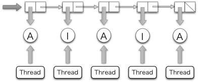
A standard way to keep consistency in Haskell is MVar. But MVar is slow, since each MVar is protected with a home-brewed lock. Instead, we used another IORef to refer to the list and atomicModifyIORef to manipulate it. atomicModifyIORef is a function for atomically updating an IORef’s values. It is implemented via CAS (Compare-and-Swap), which is much faster than locks.
The following is the outline of the safe swap and merge algorithm:
do xs <- atomicModifyIORef ref (\ys -> ([], ys)) -- swap with an empty list, []
xs' <- manipulates_status xs
atomicModifyIORef ref (\ys -> (merge xs' ys, ()))
The timeout manager atomically swaps the list with an empty list. Then it manipulates the list by toggling thread status or removing unnecessary status for killed user threads. During this process, new connections may be created and their status values are inserted via atomicModifyIORef by their corresponding user threads. Then, the timeout manager atomically merges the pruned list and the new list. Thanks to the lazy evaluation of Haskell, the application of the merge function is done in O(1) and the merge operation, which is in O(N), is postponed until its values are actually consumed.
Timers for File Descriptors
Let’s consider the case where Warp sends the entire file by sendfile(). Unfortunately, we need to call stat() to know the size of the file because sendfile() on Linux requires the caller to specify how many bytes to be sent (sendfile() on FreeBSD/MacOS has a magic number 0 which indicates the end of file).
If WAI applications know the file size, Warp can avoid stat(). It is easy for WAI applications to cache file information such as size and modification time. If the cache timeout is fast enough (say 10 seconds), the risk of cache inconsistency is not serious. Because we can safely clean up the cache, we don’t have to worry about leakage.
Since sendfile() requires a file descriptor, the naive sequence to send a file is open(), sendfile() repeatedly if necessary, and close(). In this subsection, we consider how to cache file descriptors to avoid calling open() and close() more than is necessary. Caching file descriptors should work as follows: if a client requests that a file be sent, a file descriptor is opened by open(). And if another client requests the same file shortly thereafter, the previously opened file descriptor is reused. At a later time, the file descriptor is closed by close() if no user thread uses it.
A typical tactic for this case is reference counting. We were not sure that we could implement a robust reference counter. What happens if a user thread is killed for unexpected reasons? If we fail to decrement its reference counter, the file descriptor leaks. We noticed that the connection timeout scheme is safe to reuse as a cache mechanism for file descriptors because it does not use reference counters. However, we cannot simply reuse the timeout manager for several reasons.
Each user thread has its own status—status is not shared. But we would like to cache file descriptors to avoid open() and close() by sharing. So, we need to search for the file descriptor for a requested file in a collection of cached file descriptors. Since this search should be fast, we should not use a list. Because requests are received concurrently, two or more file descriptors for the same file may be opened. Thus, we need to store multiple file descriptors for a single file name. The data structure we are describing is called a multimap.
We implemented a multimap whose look-up is $O(log N)$ and pruning is $O(N)$ with red-black trees whose nodes contain non-empty lists. Since a red-black tree is a binary search tree, look-up is $O(log(N))$ where $n$ is the number of nodes. We can also translate it into an ordered list in $O(N)$. In our implementation, pruning nodes which contain a file descriptor to be closed is also done during this step. We adopted an algorithm to convert an ordered list to a red-black tree in $O(N)$.
Future Work
We have several ideas for improvement of Warp in the future, but we will only explain two here.
Memory Allocation
When receiving and sending packets, buffers are allocated. These buffers are allocated as “pinned” byte arrays, so that they can be passed to C procedures like recv() and send(). Since it is best to receive or send as much data as possible in each system call, these buffers are moderately sized. Unfortunately, GHC’s method for allocating large (larger than 409 bytes in 64 bit machines) pinned byte arrays takes a global lock in the run-time system. This lock may become a bottleneck when scaling beyond 16 cores, if each core user thread frequently allocates such buffers.
We performed an initial investigation of the performance impact of large pinned array allocation for HTTP response header generation. For this purpose, GHC provides eventlog which can record timestamps of each event. We surrounded a memory allocation function with the function to record a user event. Then we compiled mighty with it and recorded the eventlog. The resulting eventlog is illustrated in Figure 13.
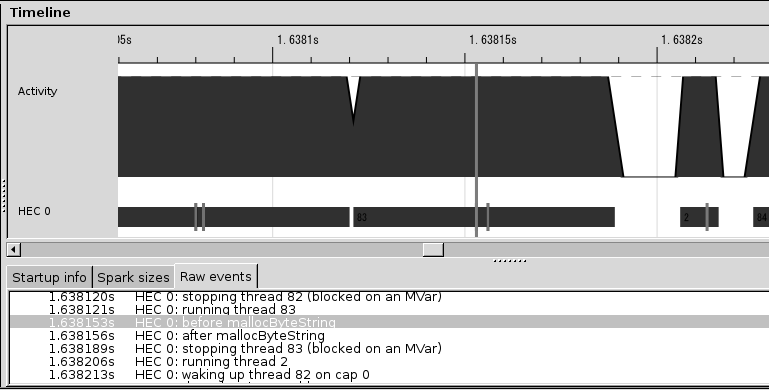
The small vertical bars in the row labelled “HEC 0” indicate the event created by us. So, the area surrounded by two bars is the time consumed by memory allocation. It is about 1/10 of an HTTP session. We are discussing how to implement memory allocation without locks.
New Thundering Herd
The thundering herd problem is an “old-but-new” problem. Suppose that processes or native threads are pre-forked to share a listening socket. They call accept() on the socket. When a connection is created, old Linux and FreeBSD implementations wake up all of the processes or threads. Only one of them can accept it and the others sleep again. Since this causes many context switches, we face a performance problem. This is called the thundering herd. Recent Linux and FreeBSD implementations wake up only one process or native thread, making this problem a thing of the past.
Recent network servers tend to use the epoll family. If workers share a listening socket and they manipulate connections through the epoll family, thundering herd appears again. This is because the convention of the epoll family is to notify all processes or native threads. nginx and mighty are victims of this new thundering herd.
The parallel I/O manager is free from the new thundering herd problem. In this architecture, only one I/O manager accepts new connections through the epoll family. And other I/O managers handle established connections.
Conclusion
Warp is a versatile web server library, providing efficient HTTP communication for a wide range of use cases. In order to achieve its high performance, optimizations have been performed at many levels, including network communications, thread management, and request parsing.
Haskell has proven to be an amazing language for writing such a code base. Features like immutability by default make it easier to write thread-safe code and avoid extra buffer copying. The multi-threaded run time drastically simplifies the process of writing event-driven code. And GHC’s powerful optimizations mean that in many cases, we can write high-level code and still reap the benefits of high performance. Yet with all of this performance, our code base is still relatively tiny (under 1300 SLOC at time of writing). If you are looking to write maintainable, efficient, concurrent code, Haskell should be a strong consideration.
-
http://gwan.com/en_apachebench_httperf.html ↩